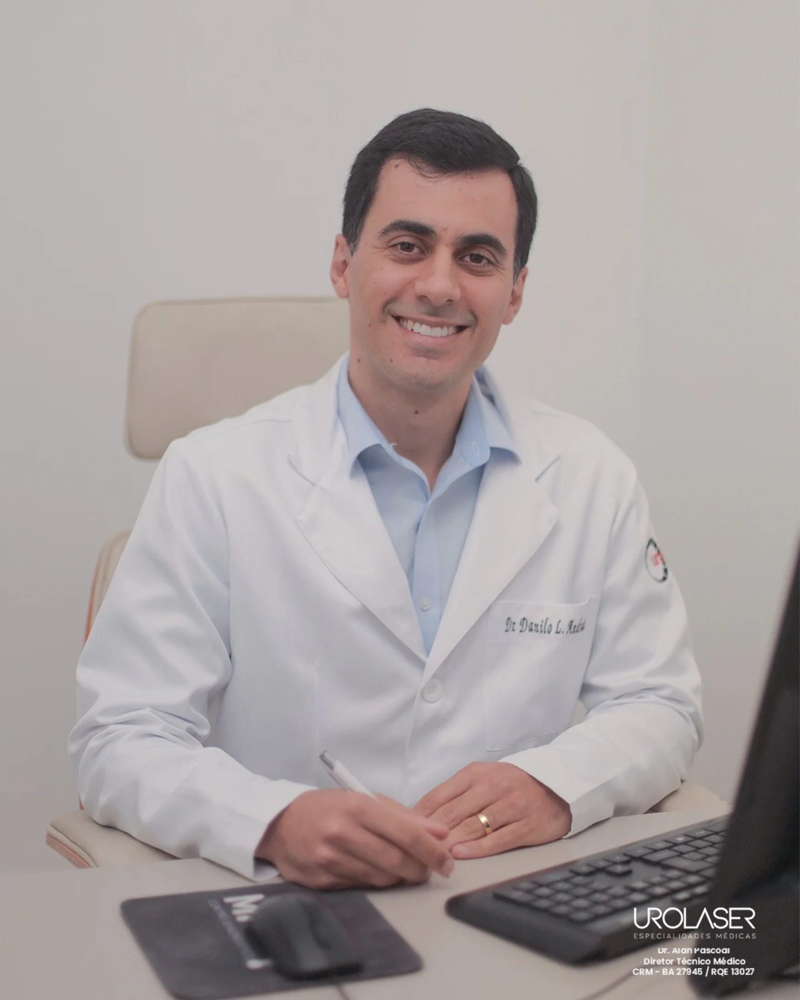
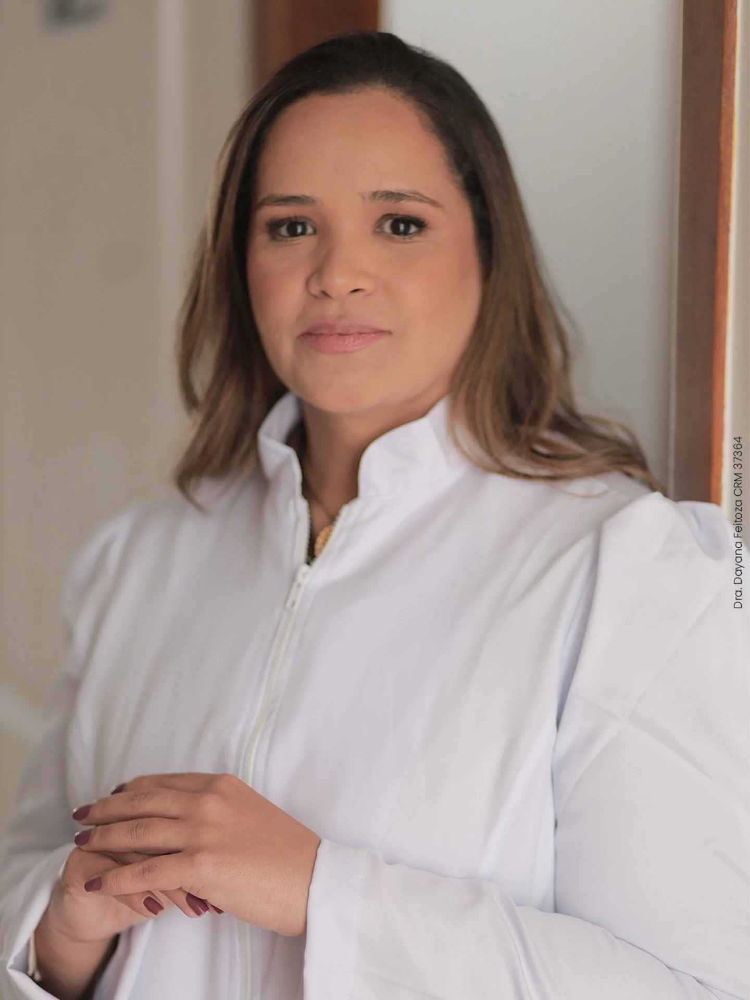
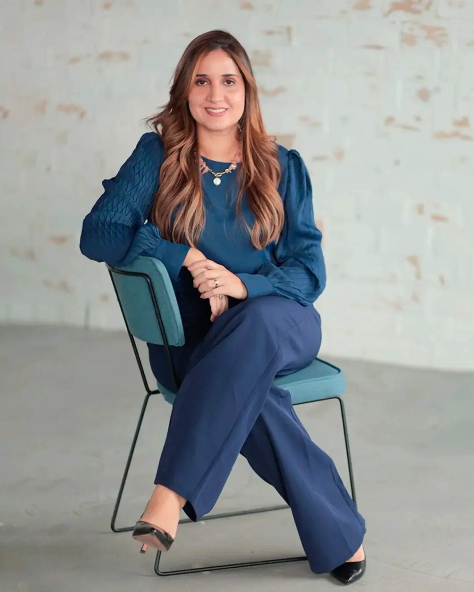
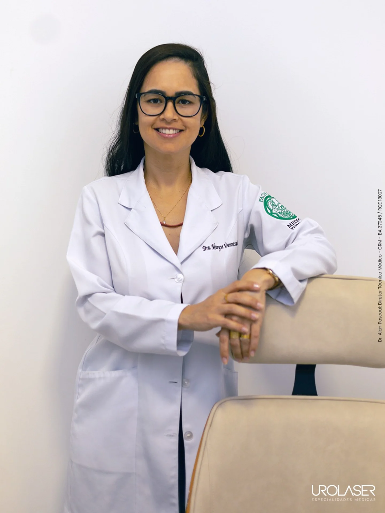
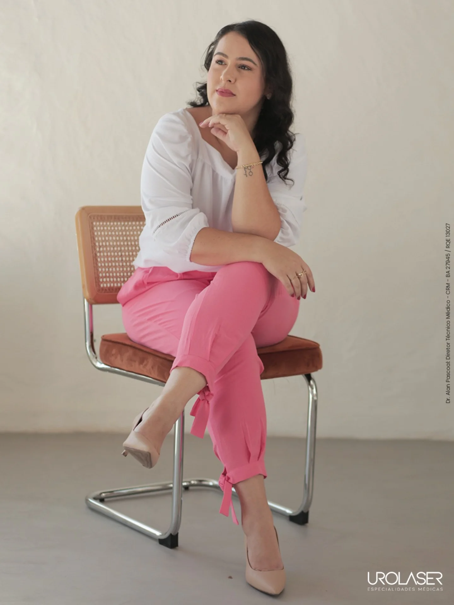

Atendimento humanizado liderado pelo Dr. Alan Pascoal e equipe multidisciplinar. Procedimentos minimamente invasivos e recuperação com máxima segurança.
Da primeira consulta ao pós-operatório, a Urolaser reúne urologia, ginecologia, coloproctologia, endocrinologia, psicologia e nutrição em uma equipe que conversa entre si e acompanha você de perto.
Consultas detalhadas, pontuais e empáticas.
Observership em robótica no MSKCC em Nova York.
Residência no Hospital Federal do Andaraí/Ipanema - RJ.
Procedimentos minimamente invasivos, com menos dor e recuperação mais rápida.
Urologista com residência no Hospital Federal do Andaraí/Ipanema (RJ) e observership em cirurgia robótica no Memorial Sloan Kettering Cancer Center, em Nova York. Lidera a Urolaser com foco em saúde da próstata, cirurgia a laser e procedimentos minimamente invasivos.
Agendar com Dr. Alan



